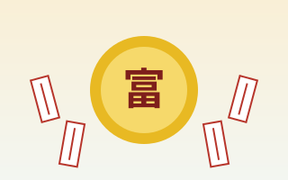
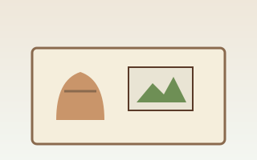
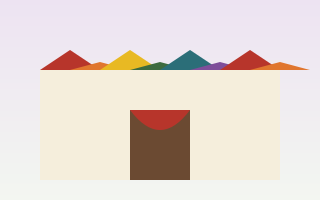

止々呂美
止々呂美ふるさと自然館
アウトドアブランド「スノーピーク」がプロデュースする施設。ダム湖の湖畔で棚田の跡や地形を生かした90サイトのキャンプフィールドと、自然体験のできる自然館からなります。プロのスタッフが常駐し、初めてのキャンプでも安心です。
役行者が修行したと伝わる箕面山には、修験道にまつわる行事がいまも受け継がれています。山伏の行列、宝くじの起源とされる富くじ、天狗の悪魔払い。自然の中で遊べる場所とあわせてご紹介します。開催日や内容は年によって変わることがあるため、お出かけ前に主催者の情報をご確認ください。
絶対秘仏の聖天様を清浄な胡麻油に直接浴して供養する、西江寺ならではの祈祷です。もみじの天ぷらは、この行事で使う油で揚げたのが始まりという説もあります。

半世紀以上続く伝統行事。本堂での星祭りのご祈祷に加え、境内では柴灯大護摩が焚かれ、その残り火を使った火渡り修行が行われます。厄除けを願う2,000人を超える人でにぎわいます。

関西一円から集まった約100名の山伏が、法螺貝を吹きながら午前10時に箕面駅前を出発し、30分ほどかけて瀧安寺まで練り歩きます。到着後の11時から、屋外に築いた護摩壇で採燈大護摩供が営まれます。雨天決行です。

新緑の季節に開かれるイベント。春の箕面は桜も見どころで、「大阪府緑の100選」に選ばれた箕面さくら並木通りでは桜のトンネルが楽しめます。
河原ではゲンジボタル、池や水路ではヘイケボタル、竹やぶや草地ではヒメボタルの光が見られます。滝道（箕面公園内）は一般車両が通行できないため、歩いて観察しましょう。
夏の特別ライトアップで、箕面大滝や瀧安寺が照らし出されます。「みのおキャンドルロード」では、箕面駅前から大滝までの滝道が4,000本以上のキャンドルで彩られます。
1986年、市制施行30周年を記念して始まったまちのお祭り。出店やステージイベント、盆踊り、パレードなど、多くの市民に親しまれています。同じ時期には駅前や商店街で納涼イベントも開かれます。
箕面を代表するお盆の行事。提灯やたいまつを手にした行列が、千里川沿いを下っていきます。
約400年前から続くとされる行事で、現在の宝くじの発祥といわれています。参加には受付所で「ミニ大福守」（1,000円）を受けます。富に参加すると、国の登録有形文化財「鳳凰閣」などの特別拝観もできます。

15日夜に宵宮、16日昼に悪魔払い、16日夜に本宮。太鼓と「やらまい！」の掛け声に合わせて天狗と神楽（獅子舞）が踊ります。天狗に叩かれると元気で賢い子に育つといわれ、無病息災と子孫繁栄を願う祭りです。10月には、あらゆる生きものを供養する蟲供養も営まれます。
紅葉の季節に合わせて、ライトアップのほか森林ヨガやガイド付きハイキングなど、もみじ狩りと一緒に楽しめるさまざまなイベントが開かれます。
地元の特産品や手づくり雑貨、新鮮な野菜などを扱う店が並ぶ、地域密着型の市。和菓子の老舗や工芸品の店も参加します。

標高100〜600mの山地に約1,100種の植物と約3,000種の昆虫が暮らす国定公園と、街なかの公園・文化施設。
アウトドアブランド「スノーピーク」がプロデュースする施設。ダム湖の湖畔で棚田の跡や地形を生かした90サイトのキャンプフィールドと、自然体験のできる自然館からなります。プロのスタッフが常駐し、初めてのキャンプでも安心です。

政ノ茶屋園地の箕面ビジターセンターは、全長1,697kmの東海自然歩道の西の起点。自然研究路や箕面歩道など、ハイキングの起点・終点としても利用されています。
1990年に鶴見緑地で開かれた「花博」を記念して大阪府が整備した森。四季の花が咲く「花の谷」や芝生広場があり、6月ごろにはモリアオガエルの産卵も見られます。
展望塔は老朽化のため立入禁止です治水を目的に1983年（昭和58年）に完成したダム（大阪府資料）。建設時から自然の保護と回復に配慮され、ダム湖を周遊しながら水と緑の景色を楽しめます。付近に駐車場はありません。国土交通省のダムカードは箕面公園昆虫館などで配布されています。

市民野球場とテニスコートに隣接する、市内でいちばん広い公園。汽車型の遊具やクヌギ林があり、石の大階段で箕面川の水辺に下りて遊べます。川沿いの遊歩道はお花見にもおすすめです。

2024年4月29日、市役所第二別館（船場西3-8-22）に移ってリニューアルオープン。「れきし」「はっけん」「くらし」の3テーマの常設展示に、ワイドシアターやクイズ形式のパネルもあります。

箕面船場阪大前駅のそばに2021年に開館した劇場。隣接する船場図書館、船場生涯学習センターとともに、船場の新しい文化拠点になっています。

一年中チョウが飛ぶ放蝶園で、チョウを間近で観察できます。展示は期間ごとに入れ替わり、土日祝は親子で楽しめる工作イベントもあります。